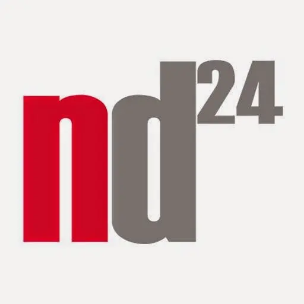
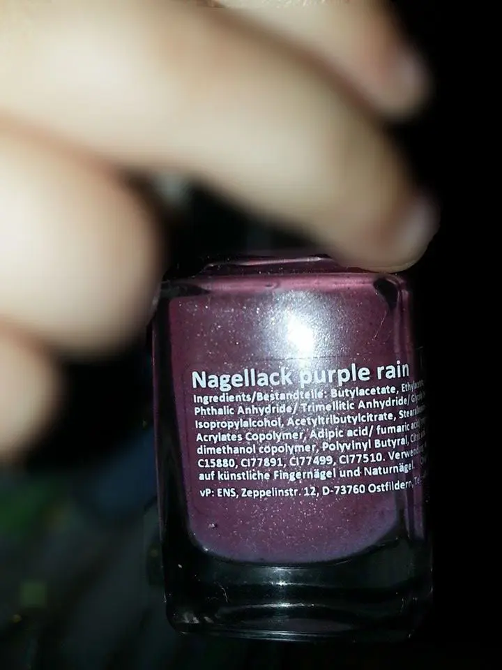
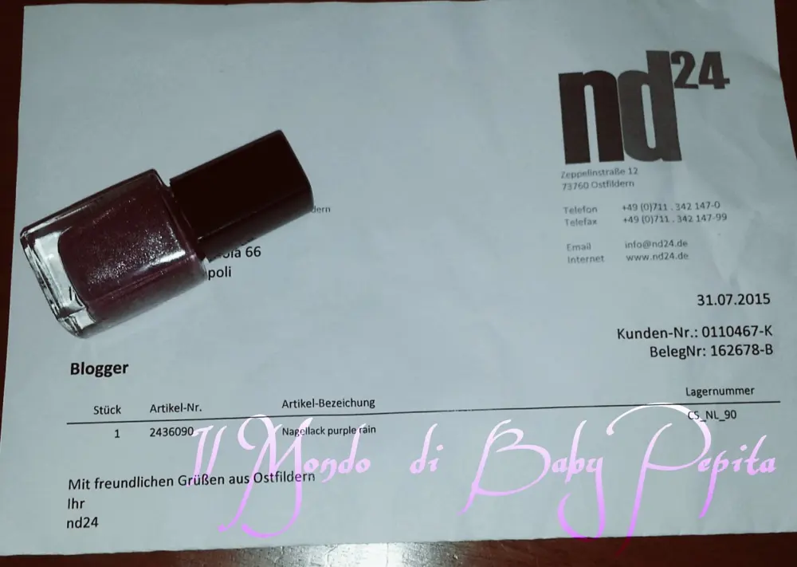
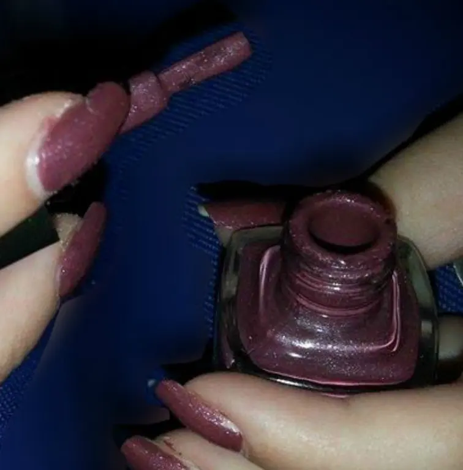
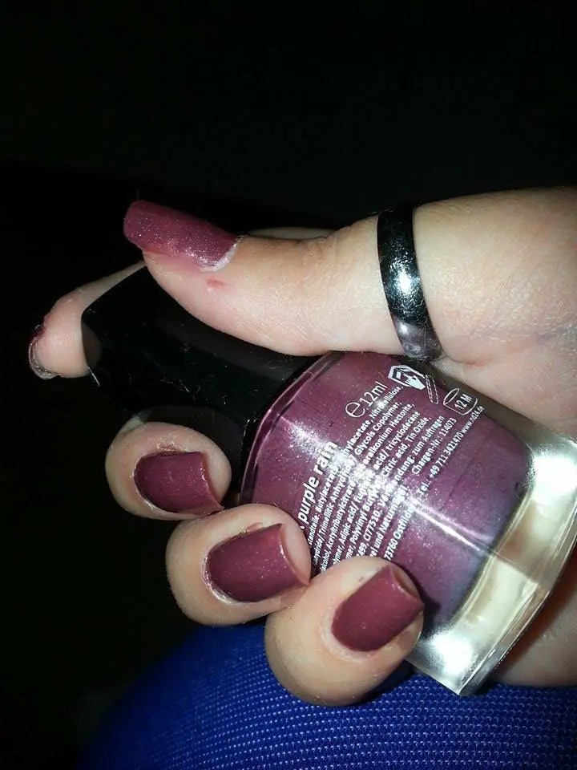
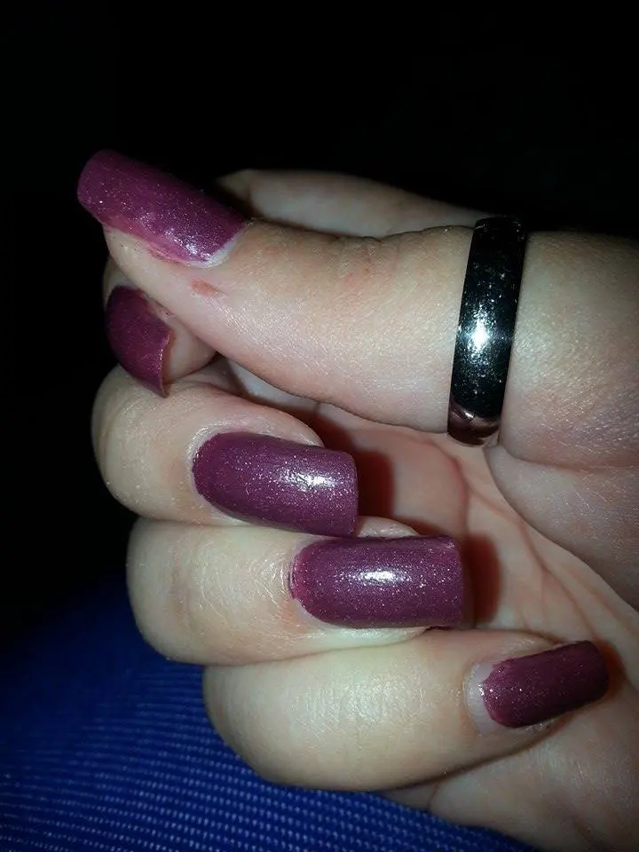
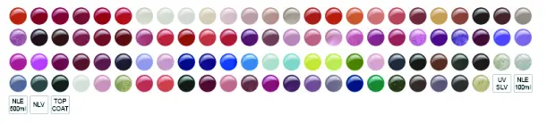

Nd24 - collaborazione
Sono felice di iniziare questo post comunicandovi che ho ottenuto la mia prima collaborazione.
Grazie all'azienda ND24 che mi ha dato fiducia omaggiandomi di un loro splendido smaltino.

Inizio col parlarvi appunto di tale marchio, è un'azienda tedesca che non conoscevo l'esistenza ma grazie al mondo del web mi ha incuriosito molto e ho voluto testare.
Marchio specializzato nella cura delle mani e non solo, nel sito c'è una vasta gamma tra gel, lampade UV e LED e anche molti ma molti smalti.
http://www.nd24.de/
Beh che dire un vero paradiso per quelle come me che amano le nail art e tutto ciò che ne consegue.
Ho provato così a contattare l'azienda che molto gentilmente e devo dire anche molto rapidi mi hanno risposto, dandomi la possibilità di scegliere che smalto volessi provare.
Lo so che siamo ancora in estate ma mi sono innamorata di un colore caldo "nagellack purple rain".
Un porpora con microglitterini dorati che danno luce al colore.

Nemmeno due settiamane dopo aver parlato con loro ed ecco arrivato a casa il pacco con lo smaltino ^_^
felicissima subito mi sono messa a provarlo e lo so ho aspettato un bel pò prima che ve ne parlassi ma ho voluto prima testarlo e poi dire la mia.

La boccetta è di 12 ml e ha un valore di 0,99 € quindi ragazze un prezzo davvero ottimo per una buona qualità.
La cosa che mi è piaciuta molto è stato il pennellino piatto al suo interno, non tutti gli smalti sono fatti così e quando lo trovo devo essere sincera mi piace perchè è molto più pratico e comodo.

L'asciugatura è ottima, cioè tempo 1 minuto, massimo 2 e si asciuga che è una meraviglia. Bella anche questa cosa soprattutto per chi come me non piace attendere che uno smalto prenda la sua piega e si stia fermo lì a fare il suo dovere ahahah
Ho fatto doppia passata per rendere id più il colore, vabbè che io amo questi colori ma un colore scuro deve essere ben marcato per ammirare tutta la sua bellezza.

La mia esperienza con questo smalto è stata molto piacevole, facile da applicare, veloce da asciugarsi, insomma una bella scelta, sono contenta di aver testato un loro prodotto perchè è un prodotto che vale.
Il mio risultato finale :

La durata?
beh, io sono una precisina e sto sempre lì a guardare se lo smalto si è sfaldato perchè non mi piace stare con le dita in disordine, per me le mani sono un biglietto da visita e quindi vi posso dire che la durata di questo smalto è stato di 10 giorni, vero è che io non faccio tante cose tipo faccende domestiche ma mi è capitato anche che pur non facendo niente uno smalto mi durasse 2 giorni, dunque più che promossa la nd24 :D
Il sito poi offre una allettante gamma di colori e prodotti sia per smalti che per riconostruzioni.
